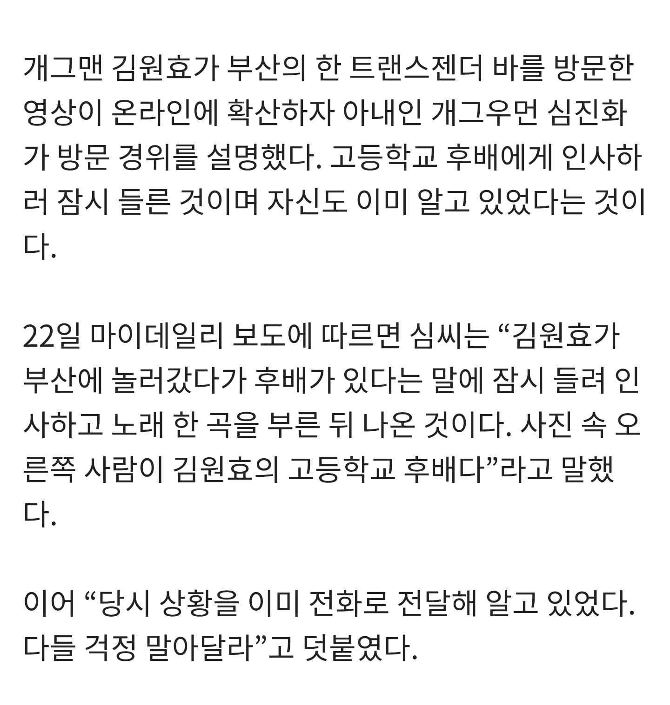

이상한곳 몰래간게아니라
아내한테 말하고
고등학교 후배보러 간거라
문제 될게 없음
그와중 아내핑계 후배핑계 대지않고 꽈추땠냐고 드립치는 상남자 ㄷㄷ
근데
나같아도 친한후배가 꽈추땠다고하면
못참고 가볼것같긴함ㅋㅋㅋㅋ

이상한곳 몰래간게아니라
아내한테 말하고
고등학교 후배보러 간거라
문제 될게 없음
그와중 아내핑계 후배핑계 대지않고 꽈추땠냐고 드립치는 상남자 ㄷㄷ
근데
나같아도 친한후배가 꽈추땠다고하면
못참고 가볼것같긴함ㅋㅋㅋㅋ
웃는게 존나인자하네 ㅋㅋ
저런 시애미질은 그냥 무시하면 될 것 같은데... 너무 심해
친했던 후배면 뗏는지 궁금할만하지ㅋ
뭐 저게 해명까지 해야되는 일인가 ?
김원효 나이대의 일반인 아저씨가
7080 라이브 (라이브카페) 가서 노래부르는거랑
똑같은건데
뭐 하긴 코인노래방 가서 노래부르는것만 정상이고 나머지는 다 비정상이라는 생각 가진 애들도 있더라만
사실 사나이들끼리 노래한곡 부른거임
요즘 이상해 사회가 ㅋㅋㅋㅋㅋ...
사나이(현재진행형)와 사나이(과거형)의 만남
ㅋㅋㅋㅋㅋㅋㅋㅋㅋ
이쒜끼들 땠어 안땠어 ㅋㅋㅋㅋㅋ
위에 내용 다 초기화 되고 이것만 궁금함 ㅋㅋㅋ
저분은 스타일이 상남자 스타일이라 바람펴도 핀다고 말하고 필 얼굴이다
좌우로 자유롭게 움직이는 저 하악이 뭔가 웃김 그냥 ㅋㅋ
삐끼출신이라 여러 인맥중 하나였을것 같다고 생각은 들었음 ㅋㅋ
아니 뗏는지 안뗏는지 알려주고 가라고 ㅋㅋㅋ
잘 살고있는데 적당히 물어뜯어라 진짜 ㅋㅋㅋㅋ